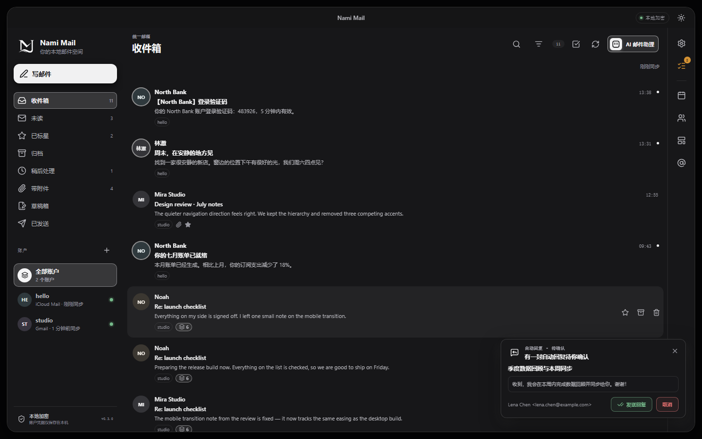
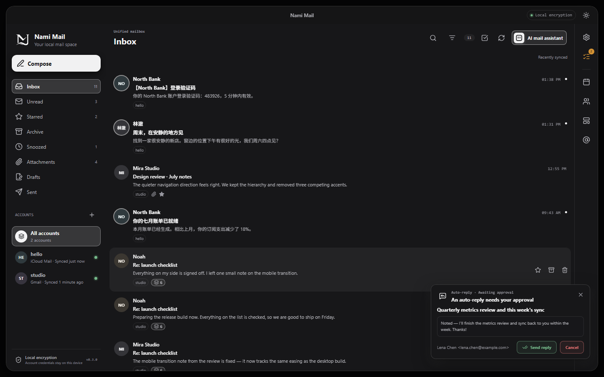
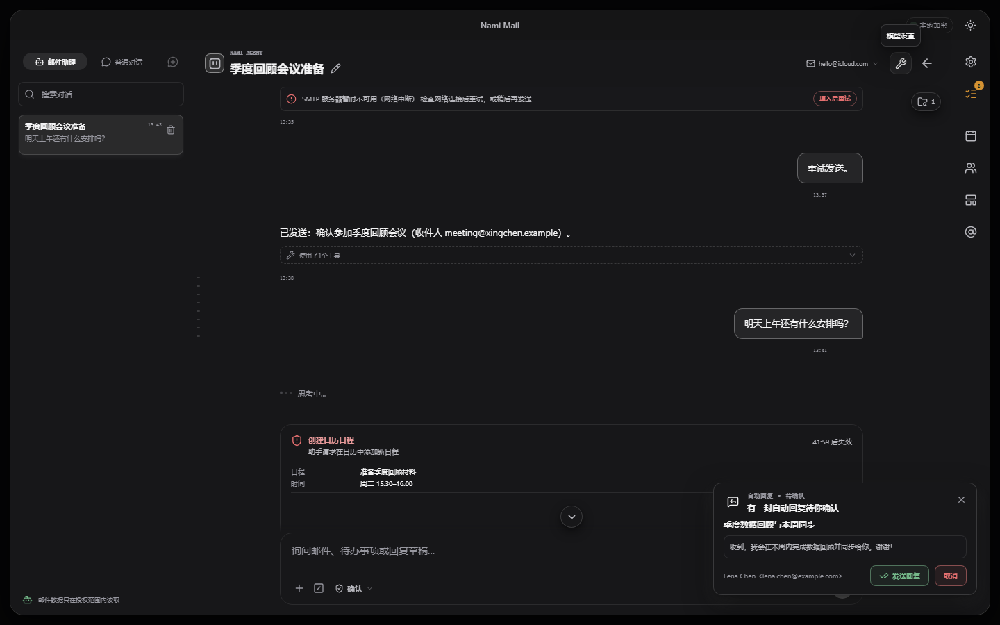
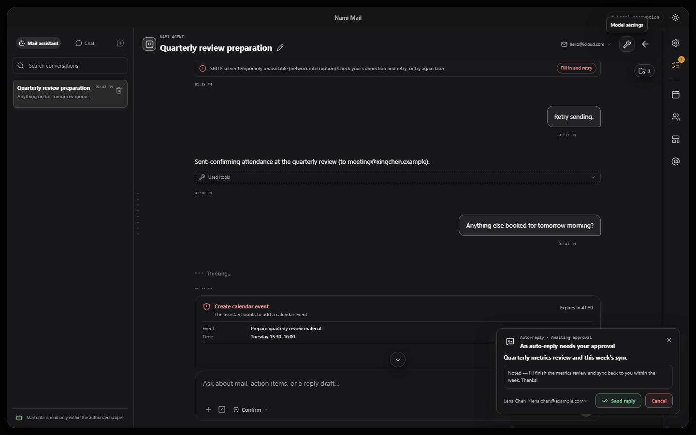

Windows x64 · 本地优先 Windows x64 · Local-first
你的邮件，留在你的机器上
Your mail stayson your machine
Nami Mail 是一款直接连接邮箱服务商的多账户桌面客户端。邮件、账户凭据与加密密钥只保存在本机；检索与 Agent 工作区也在本地完成，写操作执行前必须由你确认。
A multi-account desktop client that connects straight to your mail provider. Messages, credentials and encryption keys stay on your computer; retrieval and the Agent workspace run locally too, and every write waits for your confirmation.
- Windows x64
- IMAP · SMTP · OAuth
- 本地检索 · BM25
- Local retrieval · BM25
- CLI · MCP
- 最新版本 0.4.1 v0.4.1
安装程序未签名，SmartScreen 可能提示“未知发布者”。请不要绕过系统安全警告，只从本项目的 Release 页面获取安装包。
The installer is not signed, so SmartScreen may report an unknown publisher. Do not bypass Windows security warnings, and take the installer from this project's release page only.


01 · 能力
01 · Capabilities
功能
What it does
下面每一条都是当前版本已经实现、并随安装包一起发布的能力，末尾一行是它依赖的具体机制。
Everything here ships in the current release. The line under each entry names the mechanism it rests on.
-
加密
Encryption
本地优先与加密
Local-first and encrypted
每个账户使用独立的数据密钥，主密钥由 Windows DPAPI 保护，邮件、草稿与设置都以加密形式落盘；删除账户会先推进代际并丢弃旧密钥。
Each account has its own data key wrapped by a DPAPI-protected master key; mail, drafts and settings are stored encrypted. Deleting an account advances its generation and discards the old key first.
AES-256-GCM · WINDOWS DPAPI
-
多账户
Accounts
多账户，直连服务商
Multi-account, direct to your provider
Gmail、自建 IMAP/SMTP 与 OAuth 授权流程，客户端直接与服务商通信。前台刷新与按文件夹懒加载让大邮箱也能快速打开。
Gmail, self-hosted IMAP/SMTP and OAuth — the client talks to your provider directly. Foreground refresh with lazy per-folder loading keeps large mailboxes quick to open.
IMAP · SMTP · OAUTH 2.0
-
检索
Retrieval
本地邮件检索（RAG）
Local mail retrieval (RAG)
邮件被切成可引用的加密页面并建立 BM25 倒排索引，重启无需全量重建；关键词一个都匹配不到时，用你配置的模型把问题扩展成同义词再查同一份本地索引。
Messages become citable encrypted pages with a BM25 index that survives restarts. When keywords match nothing, the model you configured expands the question into synonyms and re-queries the same local index.
BM25 倒排索引 · 条件式查询扩展
BM25 INVERTED INDEX · CONDITIONAL EXPANSION
-
Agent
Agent
可确认的 Agent 工作区
An Agent workspace you can confirm
助手只能在授权范围内调用工具：读取不需要确认，写入在执行前弹出一次性确认并留下审计记录；回答里的引用可以点回原邮件。
The assistant only uses tools inside the scope you grant: reads need no confirmation, writes open a one-time confirmation and leave an audit record, and citations link back to the original message.
工具范围授权 · 一次性确认 · 审计记录
TOOL SCOPES · ONE-TIME CONFIRMATION · AUDIT TRAIL
-
接口
Interfaces
CLI 与 MCP 接口
CLI and MCP interface
安装包自带
namimail命令，也可作为本机 MCP 服务器接入你的客户端。外部调用经已配对的命名管道访问正在运行的应用，暴露 16 个邮件域工具。The installer ships a
namimailcommand and can serve as a local MCP server. External callers reach the running app over a paired named pipe, with 16 mail-domain tools.16 个工具（9 只读 / 7 写）· 命名管道
16 TOOLS (9 READ / 7 WRITE) · NAMED PIPE
-
撰写
Composing
写邮件与阅读
Writing and reading
模板库、附件内联预览（PDF 与图片直接渲染，Office 与文本文件提取只读文本）、定时发送、批量标记与移动、日历、中英界面，以及可选的机器翻译。
Template library, inline attachment preview (PDFs and images render; Office and text files get read-only text extraction), scheduled send, bulk flag and move actions, calendar, a bilingual interface, and optional machine translation.
模板库 · 附件只读预览 · 定时发送
TEMPLATES · READ-ONLY PREVIEW · SCHEDULED SEND
02 · 检索
02 · Retrieval
检索怎么工作
How retrieval works
关键约束是隐私：索引和页面都在本机，只有你的问题文本可能发给模型，邮件正文不会。
The binding constraint is privacy: the index and the pages are local, and only your question can reach the model — never mail content.
-
本地索引
Local index
同步下来的邮件被切成带引用的加密页面，并在本机建立 BM25 倒排索引（只存派生词项，不存正文副本），重启后可直接复用。
Synced mail becomes citable encrypted pages plus a local BM25 inverted index — derived tokens only, no second copy of the text — reusable after a restart.
-
先查词法
Keyword first
你的问题先直接查这份索引，命中就返回结果并给出来源引用。绝大多数提问在这一步就结束了，不产生任何模型调用。
The question is searched against that index directly; hits are returned with citations pointing back to the original message. Most questions end here, with no model call at all.
-
仅在无结果时扩展
Expand only when empty
只有当关键词一个都匹配不到（例如「报销」而邮件里写的是「费用申请」）时，才把问题本身发给模型换取同义与跨语言检索词，再用这些词重查同一份索引；失败或超时都只是退回关键词检索。
Only when nothing matches — 「报销」 where the mail says 「费用申请」 — is the question itself sent out for synonyms and cross-language terms, which re-query the same index. A failure or a timeout simply falls back to keyword-only search.
03 · Agent
03 · Agent
Agent 工作区
The Agent workspace
真实截图，不是效果图。
A real screenshot, not a mockup.


- 范围授权范围先于查询：先确定账户与消息范围，再检索。
- 确认写入必须确认：确认卡显示将要执行的确切操作。
- 引用来源可回溯：回答中的引用可展开并跳回原邮件。
- 停止停止即刻生效：中断不会留下半截持久化回复。
- ScopeAuthorisation before query: accounts and messages are resolved first.
- WritesWrites need confirmation: the card names the operation that will run.
- SourcesCitations go back: open the cited message from the answer.
- StopStop means stop: an interrupted turn leaves no half-persisted reply.
04 · 接口
04 · Interfaces
命令行与 MCP
Command line and MCP
安装包自带 namimail 命令，同一份能力也能作为本机 MCP 服务器暴露给你已有的客户端。下面是文档里的原样用法。
The installer ships the namimail command, and the same surface can serve as a local MCP server
for a client you already use. These are the documented invocations, verbatim.
$ namimail pair
$ namimail messages search --query "invoice" --folder INBOX --output json
$ namimail messages list --folder INBOX --since 2026-07-01T00:00:00Z --limit 20
$ namimail service start{
"mcpServers": {
"namimail": {
"command": "cmd.exe",
"args": ["/d", "/s", "/c", "namimail mcp start"]
}
}
}- 工具 Tools 16 个邮件域工具：9 个只读，7 个写。写操作按确认档位开放，和界面里一样。 16 mail-domain tools: nine read-only, seven bounded writes, opened by the same confirmation levels as the interface.
- 接入 Transport 已配对的命名管道，只允许当前用户访问；外部进程无法直接打开数据库。 A paired named pipe restricted to the current user; an external process never opens the database directly.
- 参考 Reference CLI 命令与输出包络、MCP 配置与权限档。 Commands and output envelopes, MCP configuration and access levels.
05 · 下载
05 · Download
下载
Download
当前版本 0.4.1，只从 Release 页面获取安装程序。就地升级会保留本地数据，不需要重新登录。
Current version 0.4.1. Take the installer from the release page only; in-place upgrades keep your local data and need no re-login.
- Windows x64
- 就地升级保留本地数据
- In-place upgrade keeps local data
- Ed25519
下载前请知悉
Before you download
- 仅支持 Windows x64。
- 安装程序未进行 Authenticode 签名，SmartScreen 可能提示"未知发布者"。请不要绕过系统安全警告，只从本项目的 Release 页面获取安装包。
- 自动更新通过 Ed25519 清单签名校验，但 0.3.0 → 0.4.0 的公网升级验收仍待完成。
- 本地检索不摄取附件正文；中文按单字切分，问法与邮件写法差异很大时依赖查询扩展，命中可能包含噪声。
- Windows x64 only.
- The installer is not Authenticode signed, so SmartScreen may warn about an unknown publisher. Do not bypass Windows security warnings, and take the installer from this project's release page only.
- Auto-updates are verified with an Ed25519 manifest signature, but public-network upgrade acceptance from 0.3.0 to 0.4.0 is still pending.
- Retrieval does not ingest attachment bodies, and Chinese is indexed per character — questions worded very differently from the mail rely on query expansion and hits may include noise.
06 · 文档
06 · Documentation
文档
Documentation
安装、账户、隐私、检索、Agent、MCP 与 CLI 的完整说明，与代码同仓库维护，随站点一起构建。
Everything from installation and accounts to retrieval, the Agent, MCP and the CLI — maintained in the same repository and built together with this site.
namimail 的命令、参数、输出与退出码。
CLI referenceEvery namimail command, argument, output and exit code.
MCP 接入配对、权限档，以及外露的 16 个邮件域工具。
MCP setupPairing, access levels and the sixteen mail-domain tools.
文档在部署时由仓库的 docs/ 目录预渲染成静态页面（不依赖运行时脚本或 CDN），同一份内容也镜像到
GitHub Wiki。
The pages are pre-rendered at deploy time from the repository's docs/ directory — no runtime
scripting and no CDN. The same content is mirrored to the
GitHub Wiki.